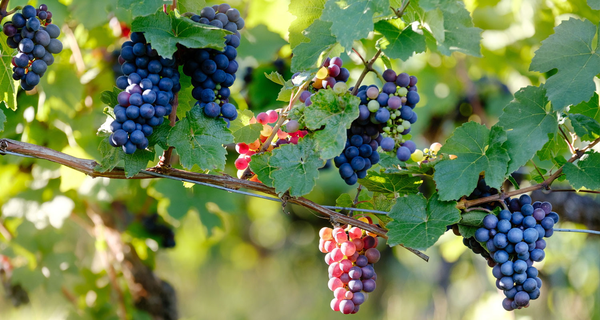
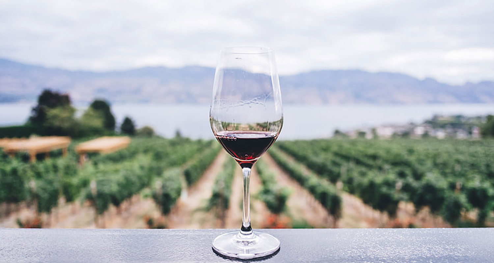
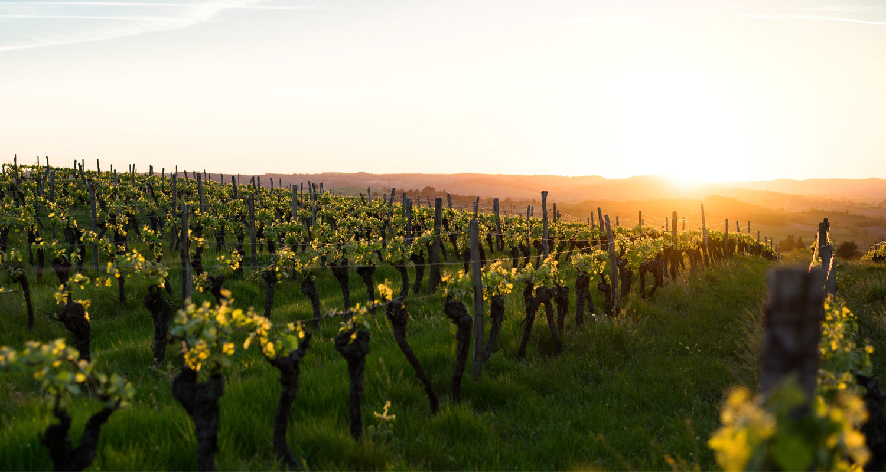

All about Tempranillo wine
Tempranillo red wine is similar in structure to Cabernet Sauvignon and has a strong fruity aroma like Carignan, this Spanish No. 1 grape wine that is truly special and appealing to wine connoisseurs. When wine is new, wine will bring a strong, fresh fruit flavor. However, with a period of immersion in oak barrels and five months, the wine will be more mature with the smell of tobacco, the leather certainly makes wine fans a "goosebumps".

Facts about grape varieties:
- This is the dominant red grape variety in Rioja, the first land in Spain to become a familiar name.
- The name Tempranillo comes from the Spanish term temprano, meaning "early" because they ripen earlier than other grape varieties.
- Tempranillo vine is one of the most easily identified climbing plants in the vineyard because of its recognizable jagged leaves.
- Do you love autumn foliage? Tempranillo is one of the few plants with bright red leaves in the fall. And it is one of the most beautiful scenes in the vineyard when autumn comes.
- Have you heard of Tempranillo Blanco? Yes, it is a mutant white grape from the red Tempranillo variety used in The White Rioja, which has the same growth cycle as the red Tempranillo, and faces even more challenges. Different from the red Tempranillo, Tempranillo Blanco is famous for its unique tropical fruit flavor.
Do you know?
- Tempranillo is a grape variety with a long history. Although the earliest official mention of this variety dates back to 1807, the general hypothesis is that Tempranillo was brought to the Iberian Peninsula (Spain and Portugal) by the Phoenicians more than 3,000 years ago. A strange piece of evidence that raises the question of the origin of the Iberian Tempranillo is the scattered plantations found in Tuscany and Basilicata, Italy.
- Tempranillo is the fourth most grown variety in the world and is considered one of the nine most noble red grapes.
- Tempranillo is one of the leading varieties blended into wine from Portugal, where it is called Tinta Roriz.
- Tempranillo wines are very tasty and easy to identify thanks to the terms that describe Spain wines.

The taste of Tempranillo and the food that goes with it
The main flavors include cherry, dry lychee, cypress, tobacco and fennel. Not only that, "age" has a great influence on this wine, making Tempranillo will arouse the unique flavor of leather.
Although well-known for its combination with red meat and ham, Tempranillo is an incredibly versatile wine that can be paired well with baked, smoked vegetables, starchy dishes, and macaroni. compose and even Mexican dishes.
The classic Tempranillo region
Tempranillo is Spain's top red wine, but it can have many, many different names depending on the region. Rioja is said to be the easiest to find and recommend when it is the first time to "wade" into Spanish wine.

Rioja and Navarra: The land specializes in providing pepper, red cherries and delicate cinnamon flavor with rich structure (a.k.a.tannin).
Ribera del Duero, Toro, Cigales: (in Castilla-León) This is often the place to produce darker, darker and minted wines than Rioja with more blackberry fruit flavor, more passionate with extremely steaming tannins guide.
La Mancha and Ribera Del Guadiana: Large areas in central Spain specializing in producing some of the best valuable Tempranillo wines in the country.
About age: When searching for Tempranillo, you may come across the following terms: Roble / Tinto, Crianza, Reserva and Gran Reserva. These are terms for the age of the wine, from little to no until 18-24 months in oak barrels with an additional four years in the bottle. In general, the more oak, the better the quality, and the more you will pay.